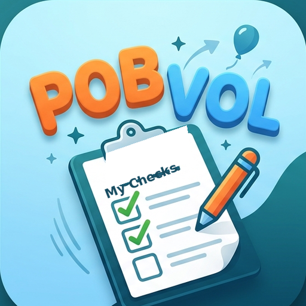
Con la aplicación de Android pobvol My Checks, puede crear rápida y fácilmente listas de control personalizadas con puntos de control y preguntas, y luego registrar, analizar y exportar los resultados de inspecciones en informes PDF. Todos los datos se respaldan automáticamente en archivos SQL. Idiomas admitidos: alemán, inglés, español y francés.
🔗 Capturas de pantalla
🔗 Panel y Navegación
🔗 Configuración
🔗 Mis Listas de Control
🔗 Puntos de control / Preguntas
🔗 Mis Registros
🔗 Realizar Inspecciones
🔗 Seguridad de Datos
🔗 Tecnología / Arquitectura
🔗 © Copyright
Top ↑
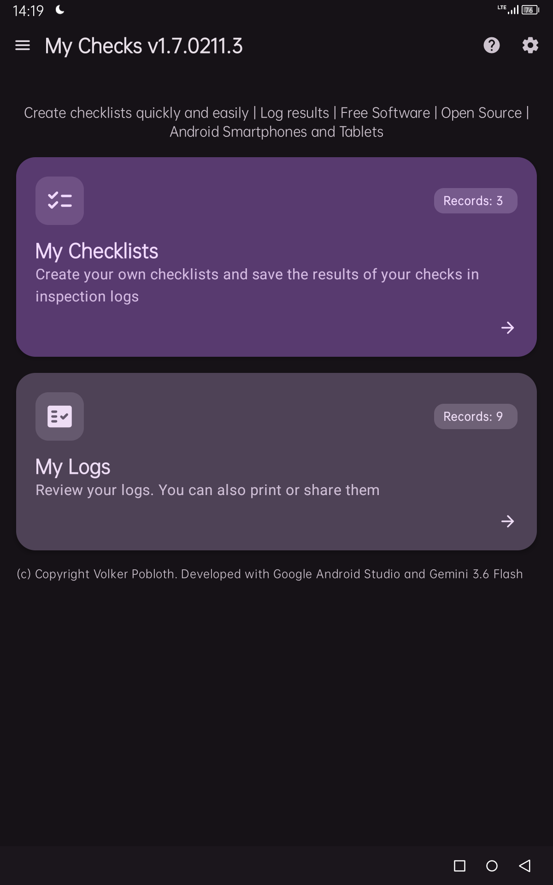
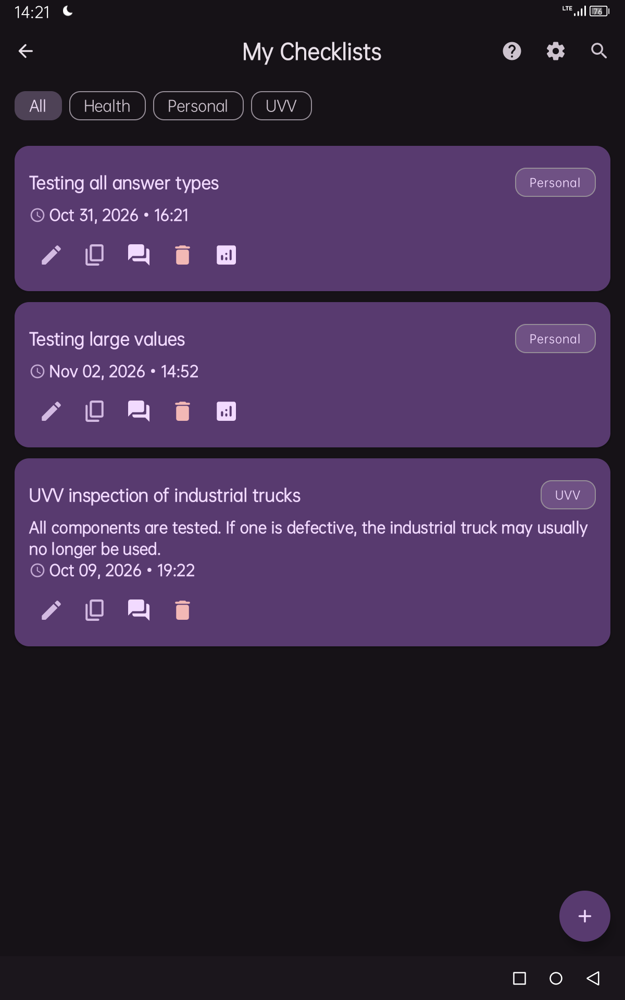
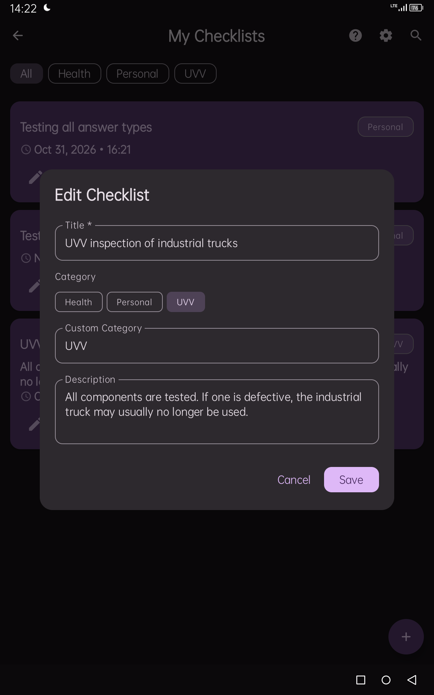
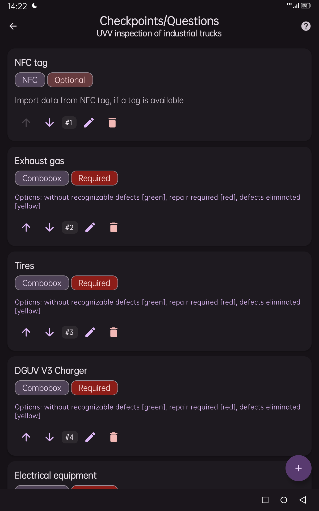
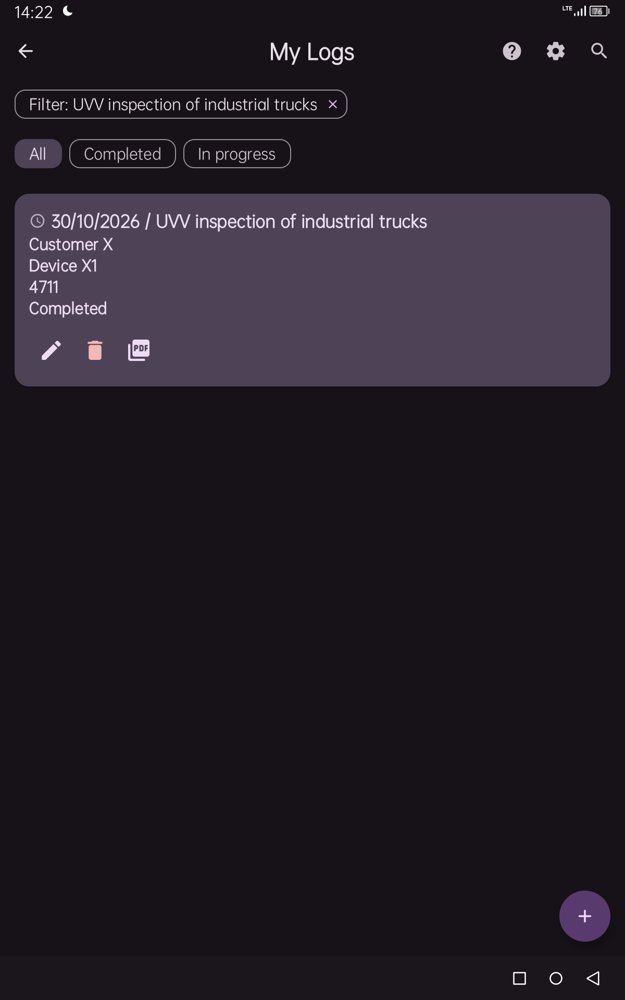
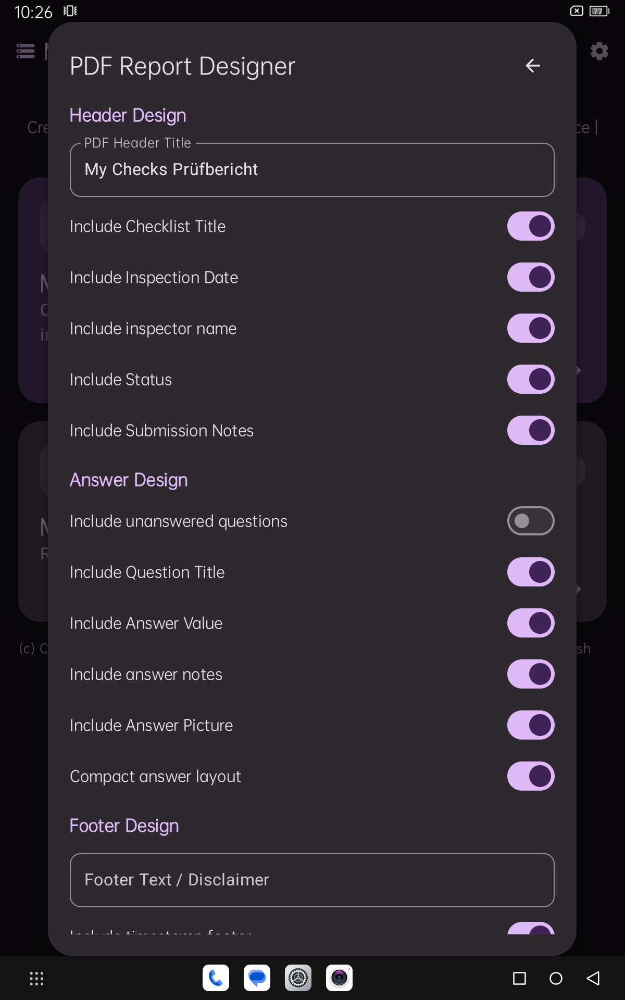
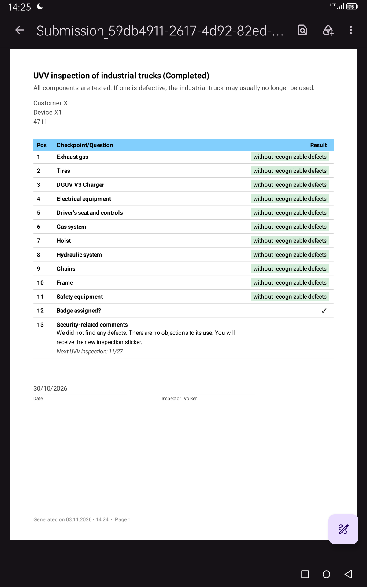
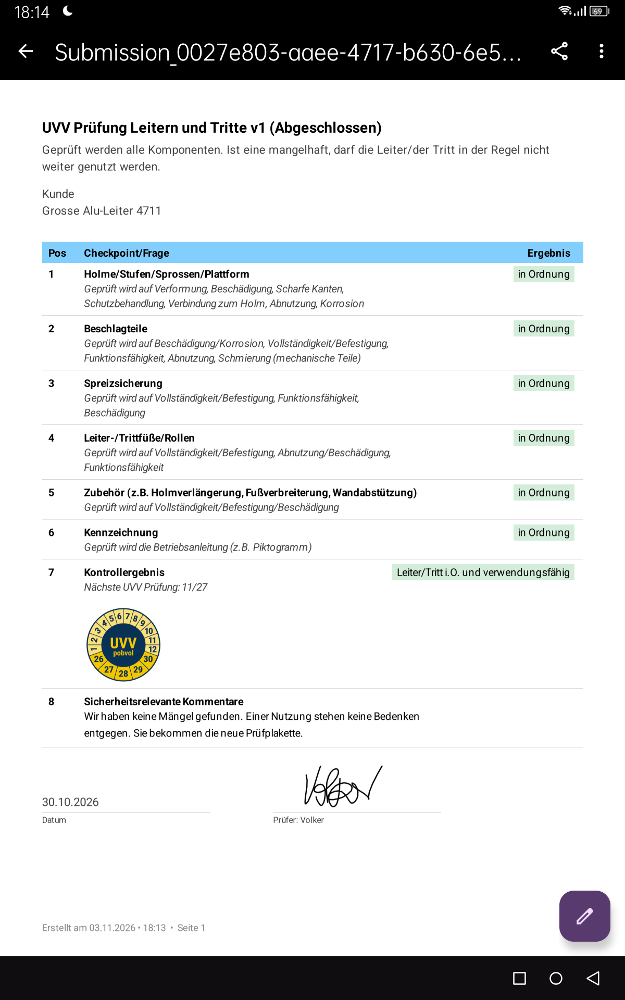
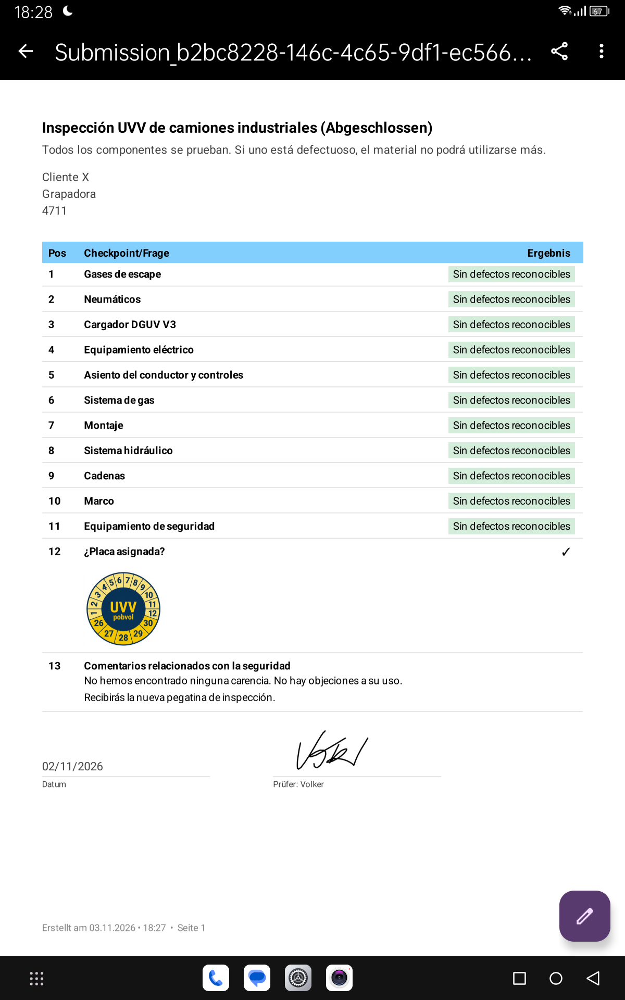
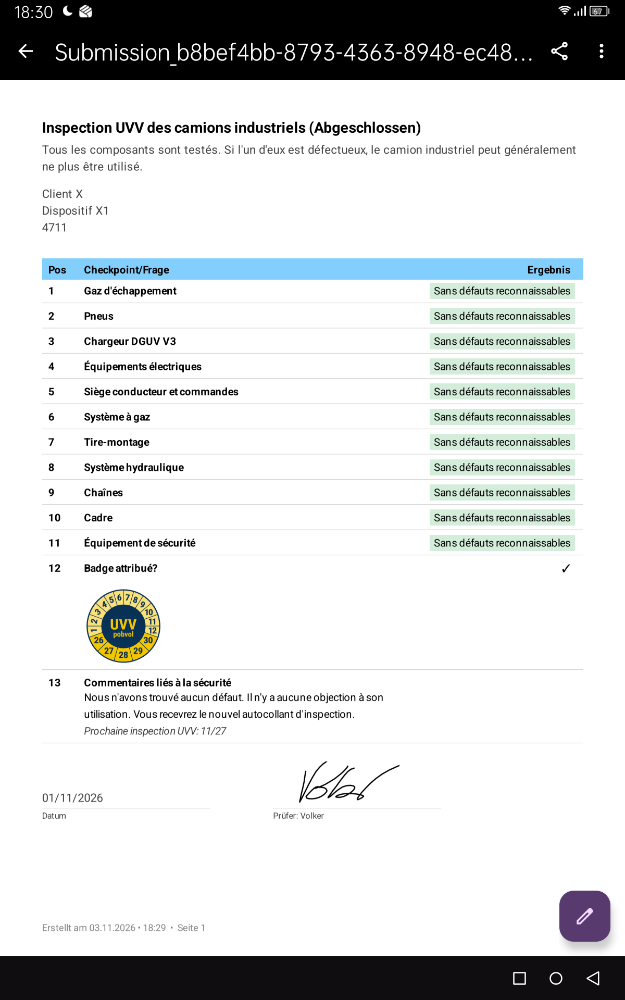
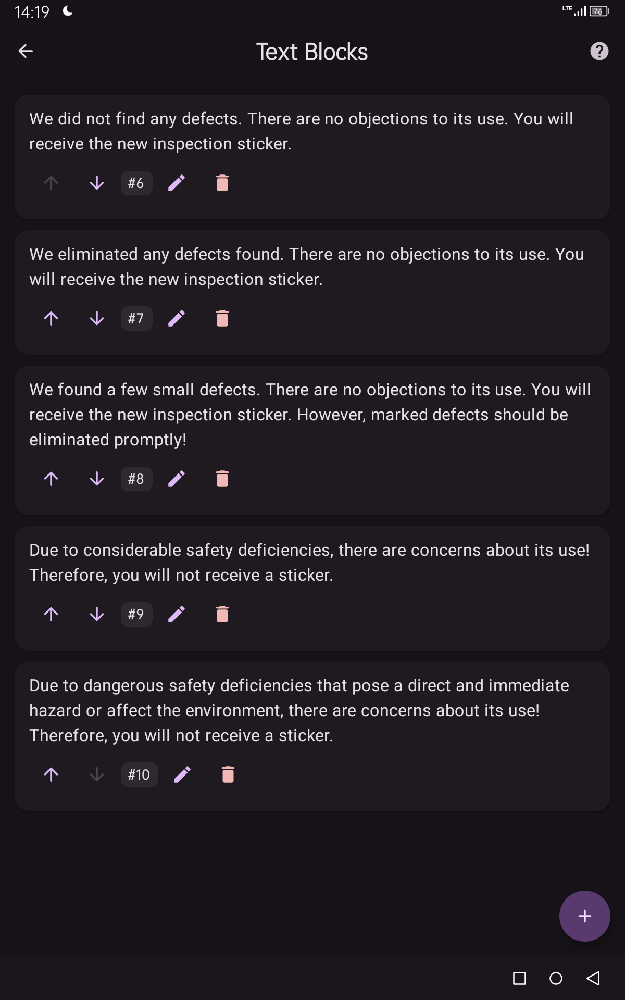
Top ↑
El panel de control es tu punto de partida.
Usa las tarjetas para navegar hasta tus listas de comprobación y Registros y acceso a
Configuración y Ayuda desde la barra superior.
<
El icono del menú en la esquina superior izquierda te mostrará el acuerdo de licencia,
Gestiona tus propios bloques de texto, gestiona la base de datos y Cierra la app.
Top ↑
En el panel de control o en la lista de comprobación, haz clic en el icono de engranaje
(⚙).
Se abrirá el cuadro de diálogo "Configuración general".
Personaliza el aspecto, el idioma preferido y las categorías para adaptarlas a tus
necesidades.
Introduce tu nombre en el campo Inspector.
Tu nombre se incluirá entonces en las actas y la salida en el PDF.
Si quieres, activa Narrador (TTS). Luego te leerán los mensajes de la app.
Top ↑
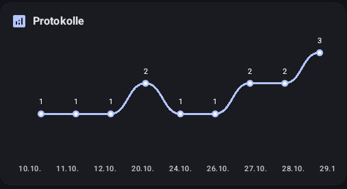 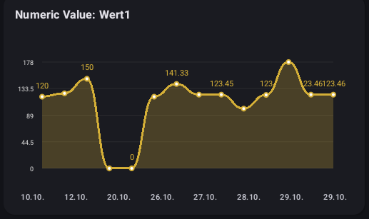 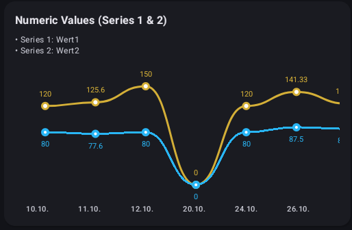
Añadir lista de comprobación: Puedes crear nuevas listas de comprobación bastante
rápido. Haz clic Simplemente haz clic en el botón **'+'** en la esquina inferior
derecha. Se abrirá el diálogo "Añadir lista de comprobación". En el campo Título,
introduce un nombre para tu nueva lista de comprobación, Asigna una categoría y, si
quieres, introduce una breve descripción. Con El botón "Añadir" guardará tus entradas y
creará tu nueva lista de verificación y se muestra en la vista general.
Encontrar listas de comprobación: Toque el icono de búsqueda (🔍) en la barra
superior para Busca listas de comprobación por título, descripción o categoría.
Filtrar listas de verificación por categoría: Filtrar la lista haciendo clic en
Categoría (Salud, UVV, etc.). Al hacer clic en Todos, el filtro vuelve a eliminar.
Copiar lista de comprobación: En una tarjeta de lista de comprobación, toque el
icono de copiar (📄) para abrir el cuadro de diálogo "Copiar lista de comprobación".
Ajuste el título y seleccione [Duplicar].
La nueva lista de verificación se crea como una copia de la lista seleccionada y se
muestra en la visión general.
Puntos de control/Preguntas: En una tarjeta de lista de comprobación, toca el
icono de la pregunta (💬), se abre la pantalla de "Puntos de control/Preguntas". Aquí
gestionas los puntos de control y Preguntas para la lista de verificación seleccionada.
Puedes averiguar cómo hacerlo un poco más adelante en el capítulo [Puntos de control / Preguntas].
Lista de verificación de eliminar: En una tarjeta de lista, toca el icono de
eliminar (🗑️), Se abre una ventana en la que tienes que confirmar la eliminación.
Eliminar un Checklist elimina automáticamente las preguntas asociadas. Por favor, nota:
Checklists, para que ya han tenido un registro registrado, no pueden ser eliminados.
Ver y añadir registros de exámenes: Toca una tarjeta de lista de comprobación
para abrir la pantalla de "Mis registros".
En este se enumeran los protocolos registrados para la lista de verificación
seleccionada.
También puedes añadir registros aquí.
Top ↑
En esta pantalla, gestionas los puntos de control/preguntas de una lista de
comprobación.
Para ello, Soporta los siguientes tipos de respuesta: texto, número, casilla de
selección, lista de selección simple, Lista de selección múltiple, NFC y código QR.
- Texto: Entrada flexible de texto
- Número: Entrada de valores numéricos. Puedes establecer un mínimo y un Valor
máximo. Estos no deben ser sub- ni superados al entrar.
- Casilla de selección: Interruptor Sí/No
- Lista de selección: Las opciones posibles deben introducirse separadas por
comas. Una opción se selecciona al rellenar la lista de comprobación. También puedes
elegir colores de fondo (verde, amarillo o rojo) insertando etiquetas de color entre
paréntesis, como sin Defectos reconocibles [verde], reparación requerida [rojo] o
defectos eliminados [amarillo]. En el La exportación PDF mostrará la opción seleccionada
con un cuadro de fondo resaltado impreso.
- Selección múltiple: Las opciones posibles deben introducirse separadas por
comas. Una o más A continuación, se seleccionan varias opciones al rellenar la lista de
comprobación. También puedes Especifica los colores de fondo (verde, amarillo o rojo)
añadiendo etiquetas de color entre paréntesis, como por ejemplo, opciones 1 [verde],
opción 2 [rojo] u opción 3 [amarillo]. En la exportación PDF, el Opción seleccionada con
un cuadro de fondo resaltado.
- NFC: Lee etiquetas NFC físicas y transfiere los datos
- Código QR: Escanea los códigos QR con la cámara y añade el valor contenido a la
Aceptar campo de respuesta.
Añadir punto de control/pregunta: Solo tienes que hacer clic en el botón **'+'**
en el Esquina inferior derecha. Se abre el diálogo "Añadir punto de control/pregunta".
En el campo Título, introduce un nombre para tu nuevo punto de control/pregunta y
organiza Un tipo de respuesta. Dependiendo del tipo de respuesta, se requiere o es
posible obtener más información. Si quieres, introduce una breve descripción. También
puedes introducir el número de ordenación, pero la app lo hará automáticamente por ti.
Los nuevos puntos de control/preguntas se marcan automáticamente como requerimientos.
Cámbialos Actitud si la pregunta no necesariamente necesita respuesta. Con el botón
"Guardar", tus entradas se guardarán y almacenarán en la visión general
mostrado.
Ajustar orden: El número de clasificación se muestra para cada entrada (por
ejemplo, #1, #2). Esto controla la posición en la lista. Utiliza el Flechas arriba
(↑)/abajo(↓) para ajustar el orden de las preguntas. Un cambio hace que los números de
ordenación de otras entradas se ajusten automáticamente.
Edición punto de control/pregunta: Toca el icono de Cambiar (✏️), se abre el
cuadro de diálogo "Editar punto de control/Pregunta". Aquí puedes seleccionar el título,
el descripción, el número de clasificación, el tipo de respuesta. Por supuesto, también
puedes si la inscripción es obligatoria u opcional.
Borrar punto de control/pregunta: Toca el icono de borrar (🗑️), Se abre una
ventana en la que tienes que confirmar la eliminación.
Top ↑
Configuración: Si haces clic en el icono de engranaje (⚙), se abre el cuadro de
diálogo "PDF Report Designer". Personalizar el diseño de los informes PDF (cabecera, pie
de página, saltos de página, visualización de fecha y estado).
Para las imágenes, puedes ajustar tus valores para S, M, L a tu gusto.
Por defecto, 100px se usa para S, 200px para M y 300px para L.
Añadir minutos: Simplemente haz clic en el botón **'+'** en la esquina inferior
derecha.
Para más información, véase el capítulo [Realizar
Inspecciones].
Encontrar registros: Toca el icono de búsqueda (🔍) en la barra superior para
Encuentra actas por fecha, título o notas.
Filtrar listas de comprobación por estado: Filtrar la lista tocando un estado
(Completado, en progreso). Al hacer clic en Todo se elimina el filtro.
Registro de edición: En un mapa, toca el icono de Cambiar (✏️), se abre la
ventana de "Editar protocolo" y puedes ajustar tus entradas.
Registro de borrar: Toca el icono de borrar (🗑️) en una tarjeta, se abre Una
ventana en la que tienes que confirmar la eliminación. Eliminar un registro Elimina
todas las respuestas relacionadas.
Top ↑
Haz clic en la tarjeta "Mis listas de comprobación" en el panel de control y abre la
pantalla correspondiente.
Haz clic en una tarjeta de lista de verificación para comenzar la Grabando un examen.
Se abre el formulario "Rellenar la lista de comprobación". 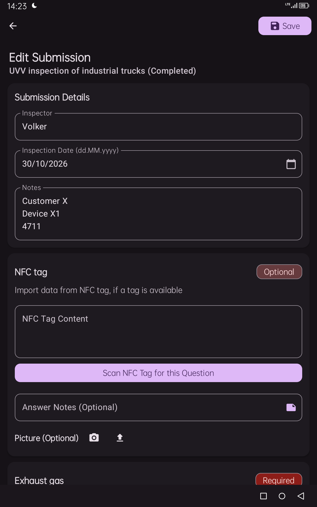
- Revisor: El nombre del revisor se ha rellenado automáticamente desde la
configuración. Tú puede cambiarlo.
- Fecha de inspección: La fecha se ha preestablecido con la fecha actual
(actualmente fijada dd.MM.y). Puedes cambiar esto.
- Estado: El estado se ha preestablecido como "en progreso". Por el momento,
puedes establecer el Estado. Pero eso se apagará.
- Notas: Si quieres, puedes añadir información adicional sobre el examen en las
notas. Utiliza esta opción, ya que las notas se muestran en la visión general del
registro. Esto facilita que encuentres un examen.
- Etiquetas NFC: Para preguntas NFC, pulsa el botón NFC y mantén pulsado Etiqueta
NFC en la parte trasera de tu dispositivo para que pueda ser escaneado. Cuando todo ha
funcionado, los datos se han transferido al campo de respuesta. Por favor, tenga en
cuenta que esto En tu dispositivo.
- Códigos QR: Para preguntas sobre códigos QR, pulsa el botón "Escanear código
QR". Así El escáner de cámara se abre y puedes grabar el código. Si todo fue bien, Los
datos se han transferido al campo de respuesta. Ten en cuenta que la aplicación Se
requieren permisos de cámara.
- Añadir imagen: Toque el icono "Tomar imagen" o el icono de "Subir imagen" para
añadir una foto a una respuesta.
Las imágenes se almacenan en la carpeta segura de la app
(/data/data/com.pobvol.mychecks).
Utiliza los iconos "S", "M", "L" para especificar el tamaño en el que debe generarse una
imagen en el documento PDF.
S representa un ancho de 100px, M un ancho de 200px y L un ancho de 300px.
Puedes configurarlo individualmente para cada imagen o respuesta.
Archivos PDF y SQL: Los archivos PDF y SQL se crean automáticamente
para listas
de verificación completamente completadas tan pronto como todos se recopilaron datos. El
estado se establece automáticamente como "Completado".
Un archivo PDF se guardará en la carpeta Download/pobvolMyChecks/pdf.
Un archivo SQL se almacena en la carpeta Download/pobvolMyChecks/sql.
Para cada archivo SQL, se almacena un archivo adicional con la suma de comprobación
correspondiente en la carpeta SQL.
Si se han añadido imágenes, también se copian a la carpeta sql.
Top ↑
Los datos solo se almacenan en tu dispositivo.
La propia aplicación no transfiere ningún dato a la nube ni a servidores de
terceros.
Tus ajustes personales están en una zona segura de la app
(/data/data/com.pobvol.mychecks/shared_prefs).
Las listas de comprobación, registros y frases se almacenan en una base de datos
SQL local de Android.
Esto también se encuentra en la zona segura de la aplicación
(/data/data/com.pobvol.mychecks/databases).
La app también te ofrece una pequeña base de datos de demostraciones.
Puedes crear una copia de seguridad de la base de datos en cualquier momento
desde la pantalla de inicio (elemento del menú "Gestionar la base de datos)" e
importarla de nuevo.
Puedes activar la base de datos de demostración o restablecer la base de datos a su
estado original.
Por favor, ten en cuenta que tus datos serán sobrescritos por estas acciones.
Asegúrate de hacer una copia de seguridad de tus datos antes.
Las copias de la base de datos se pueden encontrar en tu carpeta de descargas,
subcarpeta pobvolMyChecks/dbbackup.
La aplicación crea automáticamente archivos PDF tan pronto como se completa un
examen y se guarda el registro.
Los archivos PDF se pueden encontrar en su carpeta de descargas, subcarpeta
pobvolMyChecks/pdf.
Los PDFs que ya no necesitas pueden eliminarse de esta carpeta.
Ten en cuenta que los PDFs se recrearán tan pronto como guardes el registro de
nuevo.
Las imágenes que añades a tus respuestas se pueden encontrar en tu carpeta de
descargas, Subcarpeta pobvolMyChecks/pictures.
La aplicación utiliza esto cuando se va a recrear un PDF.
Puedes eliminar imágenes que ya no necesitas de esta carpeta.
Por favor, ten en cuenta que las imágenes eliminadas no se generarán en PDFs recién
creados !
Los archivos SQL son creados automáticamente por la aplicación tan pronto como se
completa una comprobación y se guarda el registro.
Los archivos SQL se pueden encontrar en su carpeta de descargas, subcarpeta
pobvolMyChecks/sql.
En esta carpeta, encontrarás un archivo con la suma de comprobación correspondiente para
cada archivo SQL.
Además, en esta carpeta se almacenan copias de las imágenes utilizadas.
Ten en cuenta que los archivos SQL se recrean tan pronto como vuelves a guardar un
registro completado.
Los datos que están en tu carpeta de descargas pueden transferirse a un PC o a la nube
con otra aplicación (por ejemplo, Autosync).
La app ** pobvol My Checks ** no transmite ningún dato.
Top ↑
- Lenguaje de desarrollo: Kotlin
- Marco de interfaz: Composición de Jetpack y Material 3 (con soporte
Edge-to-Edge)
- Base de datos: Biblioteca de Persistencia de Habitaciones (SQLite con
migraciones automáticas de esquemas y Eliminado en cascada)
- Creación de documentos: API 'PdfDocument' de Android (renderizado vectorial A4)
- Procesamiento de imágenes: Composición en bobina
- Permisos y Hardware: Contratos de cámara, envío NFC en primer plano y Alcance
Storage MediaStore APIs
- Dispositivos compatibles: smartphones y tabletas Android
- Idiomas soportados: alemán, inglés, español y francés
Top ↑
La app pobvol My Checks es Software Libre☯
y se ofrece de código abierto.
La app fue desarrollada con Google Android Studio y Gemini 3.5 Flash Lite y Gemini 3.6
Flash.
El código fuente se publicó a través de GitHub☯.
CONCESIÓN DE LICENCIA
Puedes descargar, instalar, operar, modificar y redistribuir la aplicación bajo los
términos de la Licencia Pública GNU General Public
License v3☯.
AVISO LEGAL
La aplicación se proporciona con la esperanza de que sea útil, pero SIN NINGUNA GARANTÍA
DE NINGÚN TIPO; incluso sin la garantía implícita de COMERCIALIZACIÓN o IDONEIDAD PARA
UN PROPÓSITO PARTICULAR. El desarrollador no se hace responsable de ninguna pérdida de
datos ni registros erróneos.
CONSENTIMIENTO
Al hacer clic en [Aceptar y Aceptar], has confirmado que has leído, entendido y aceptado
estos términos y condiciones cuando comienzas el proyecto.
ENLACES EXTERNOS
El contenido de las páginas enlazadas es siempre responsabilidad del proveedor o
operador correspondiente de las páginas. Los enlaces externos están marcados con este
símbolo: ☯
DERECHOS DE AUTOR
Copyright © 2026 Volker Pobloth, pobvol Software Services. Todos los derechos
reservados.